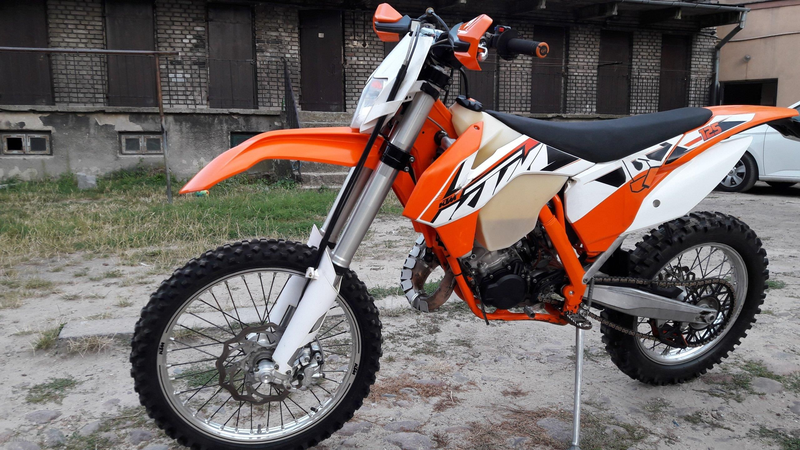
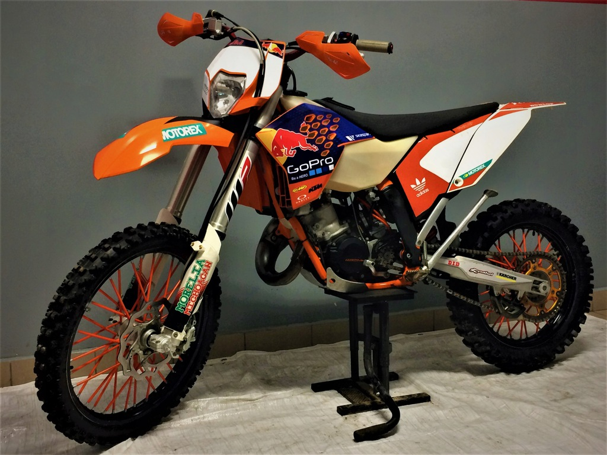
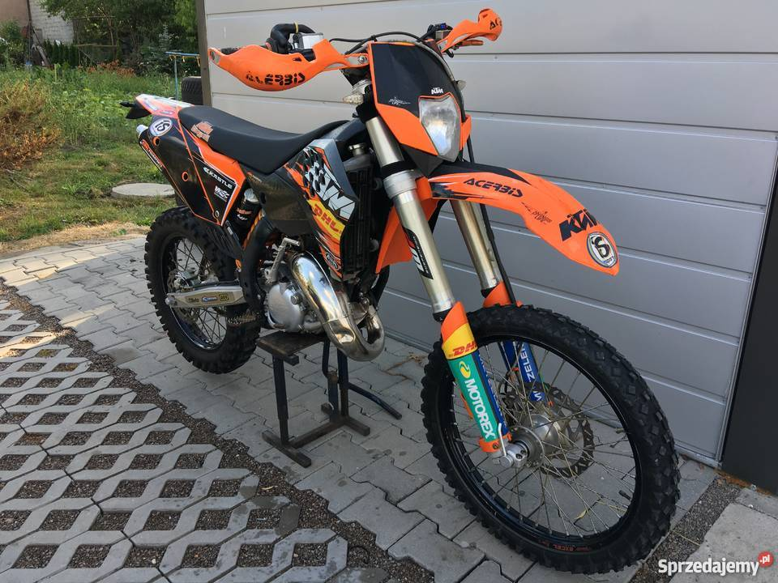

Ktm exc 125
WERSJA SIX DAYS - International Six Days Enduro (ISDE) (Drużynowe Mistrzostwa Świata Zespołów Narodowych[1], do 1980 International Six Days Trials (ISDT)) potocznie zwane Sześciodniówką - doroczne drużynowe zawody motocyklowe enduro rozgrywane pod auspicjami Fédération Internationale de Motocyclisme (FIM), będące, zgodnie z regulaminem FIM, dorocznym testem niezawodności motocykli i umiejętności kierowców składające się z sześciu jednodniowych etapów rozgrywanych w kolejnych dniach.
Dwusuwowy 125 EXC, cieszący się dużym zainteresowaniem wśród fanów leśnego szaleństwa, to zupełnie nowa odsłona motocykli typu enduro. Sześciobiegowa skrzynia biegów, nowa membrana V-Force 3, czy chociażby CDI z możliwością wyboru między dwoma wgranymi mapami zapłonowymi, zapewniającymi odpowiednie dostosowanie stylu jazdy do warunków. Nowa, lżejsza rama sprawia, że motocykl jeszcze łatwiej się prowadzi. Dodatkowo plastiki z tworzywa sztucznego o niezłym designie sprawiają, że staje się jeszcze bardziej pożądany, niż dotychczas. Zastosowanie znajdzie zarówno w rękach początkującego adepta, jak i zawodowego kierowcy klasy E1.
KTM EXC 125 to małolitrażowy motocykl klasy enduro produkowany od 2001 roku. Fenomenalne właściwości terenowe, mocny silnik dwusuwowy i mocna konstrukcja zapewniły mu dużą popularność wśród początkujących motocyklistów. KTM EXC 125 został wyposażony w jednocylindrową jednostkę napędową o pojemności skokowej 124 ccm. Chłodzony cieczą dwusuw otrzymał gaźnikowy układ zasilania renomowanej marki DellOrto (średnica gardzieli - 37 mm), cyfrowy zapłon firmy Kokusan oraz mechaniczny rozrusznik (kickstarter). Silnik generował moc maksymalną 15 KM i maksymalny moment obrotowy 14 Nm, co gwarantowało świetne przyspieszenie i prędkość maksymalną ponad 100 km/h. Przeniesieniem mocy na tylne koło zajmowała się manualna skrzynia biegów o sześciu przełożeniach, klasyczny łańcuch napędowy i mokre, wielotarczowe sprzęgło. Z uwagi na duże osiągi model EXC 125 nie należał do ekonomicznych motocykli. Średnie spalanie wynosiło 5 l/100 kilometrów, co przy zbiorniku paliwa o pojemności 9 litrów pozwalało na przejechanie niecałych 200 kilometrów na jednym tankowaniu. KTM EXC 125 to nie tylko dopracowana jednostka napędowa, ale też doskonałe zawieszenie i skuteczny układ hamulcowy. Widelec teleskopowy typu Upside-down uznanej marki Marzocchi (model Magnum 45, średnica lag - 43 mm) i w pełni regulowany amortyzator firmy Ohlins (typ 3A) dawały radę każdym nierównościom terenu. Użytkownik dysponował skokiem 300 i 345 mm (przód/tył), co w ciężkim terenie pokazywało prawdziwą siłę dobrego zawieszenia. Przy kołach zamontowano wentylowane tarcze hamulcowe (z przodu o średnicy 260 mm, z tyłu zaś 220 mm) oraz dwu- i jednotłoczkowe zaciski hamulcowe (przód/tył). Model EXC 125 toczył się na szprychowych felgach o średnicy 21 i 18 cali (przód/tył), które obuto w wąskie, terenowe opony (90/90 i 120/90 - przód/tył).
Kliknij aby wrócić do strony głównej !


